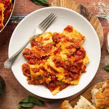

Ravioli

What's better than ground beef? Ground beef stuffed inside of pasta! This is a simple and yummy
recipe for making a plate of ravioli!
Ingredients
- jar (25.5 oz) Muir Glen™ organic pasta sauce (any variety)
- package (25 to 27 1/2 oz) frozen cheese-filled ravioli
- cups shredded mozzarella cheese (8 oz)
- tablespoons grated Parmesan cheese
Directions
- Heat oven to 350°F. Spray bottom and sides of rectangular baking dish,
13x9x2-inches, with cooking spray.
- Spread 3/4 cup of the pasta sauce in baking dish.
Arrange half of the frozen ravioli in single layer over sauce; top with half of the remaining pasta sauce and 1 cup of the mozzarella cheese.
Repeat layers once, starting with ravioli. Sprinkle with Parmesan cheese.
- Cover with foil; bake 40 minutes. Remove foil; bake 15 to 20 minutes or until bubbly and hot in center.
Let stand 10 minutes before serving.